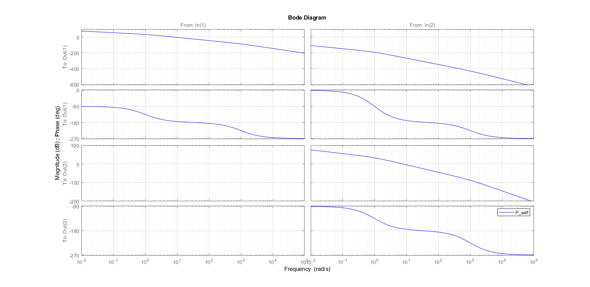

Contents
ACO Q2 model trimming and convert to linearized model
clc
clear
Setting trim parameters and performing trim
MODEL_NAME = 'm02_linearization_model';
TARGET_GAMMA_DEG = 730;
TARGET_ALPHA_DEG = 70;
TARGET_VAZ_VOLT = 5;
TARGET_VEL_VOLT = 5;
STATE_GAMMA_DEG = 15;
STATE_dGAMMA_DEG = 1;
STATE_ALPHA_DEG = 30;
STATE_dALPHA_DEG = 1;
STATE_QGAMMA_NM = 1;
STATE_QALPHA_NM = 1;
triminit.Y0 = [TARGET_GAMMA_DEG;TARGET_ALPHA_DEG];
triminit.U0 = [TARGET_VAZ_VOLT;TARGET_VEL_VOLT];
triminit.X0 = [STATE_GAMMA_DEG;STATE_dGAMMA_DEG;STATE_ALPHA_DEG;
STATE_dALPHA_DEG;STATE_QGAMMA_NM;STATE_QALPHA_NM];
triminit.fixedX0Idx = [];
triminit.fixedU0Idx = [];
triminit.fixedY0Idx = [];
display(triminit)
[X0, U0, Y0] = trim(MODEL_NAME, ...
triminit.X0, triminit.U0, triminit.Y0,...
triminit.fixedX0Idx, triminit.fixedU0Idx,...
triminit.fixedY0Idx)
if abs(triminit.Y0 - Y0) > 1e-6
warning('Trimming might not have worked.')
end
triminit =
struct with fields:
Y0: [2×1 double]
U0: [2×1 double]
X0: [6×1 double]
fixedX0Idx: []
fixedU0Idx: []
fixedY0Idx: []
X0 =
372.5000
-0.0000
36.8373
-0.0000
0.0000
-0.0000
U0 =
1.0e-09 *
0.3619
-0.0000
Y0 =
372.5000
36.8373
Warning: Trimming might not have worked.
Linearization, getting the trasnfer function
[A_ss, B_ss, C_ss, D_ss] = linmod(MODEL_NAME, X0, U0)
P_ss_self = ss(A_ss, B_ss, C_ss, D_ss);
P_self = zpk(P_ss_self)
save linearizedModel_Outputs
A_ss =
1.0e+04 *
0 0.0001 0 0 0 0
0 -0.0001 -0.0000 0 5.6887 0
0 0 0 0.0001 0 0
0 0 0 -0.0001 0 5.7296
0 0 0 0 -0.1000 0
0 0 0 0 0 -0.1000
B_ss =
0 0
0 0
0 0
0 0
1 0
0 1
C_ss =
1 0 0 0 0 0
0 0 1 0 0 0
D_ss =
0 0
0 0
P_self =
From input 1 to output...
56887
1: ----------------
s (s+1) (s+1000)
2: 0
From input 2 to output...
-3.923e-07
1: --------------------
s^2 (s+1)^2 (s+1000)
57296
2: ----------------
s (s+1) (s+1000)
Continuous-time zero/pole/gain model.
Plotting the diagrams for the Plant
om_rad = logspace (-5, 5 , 1001);
step_t = linspace(0, 0.3, 1001);
figure(1)
clf
bode(P_self, 'b-')
legend
grid on
grid on
